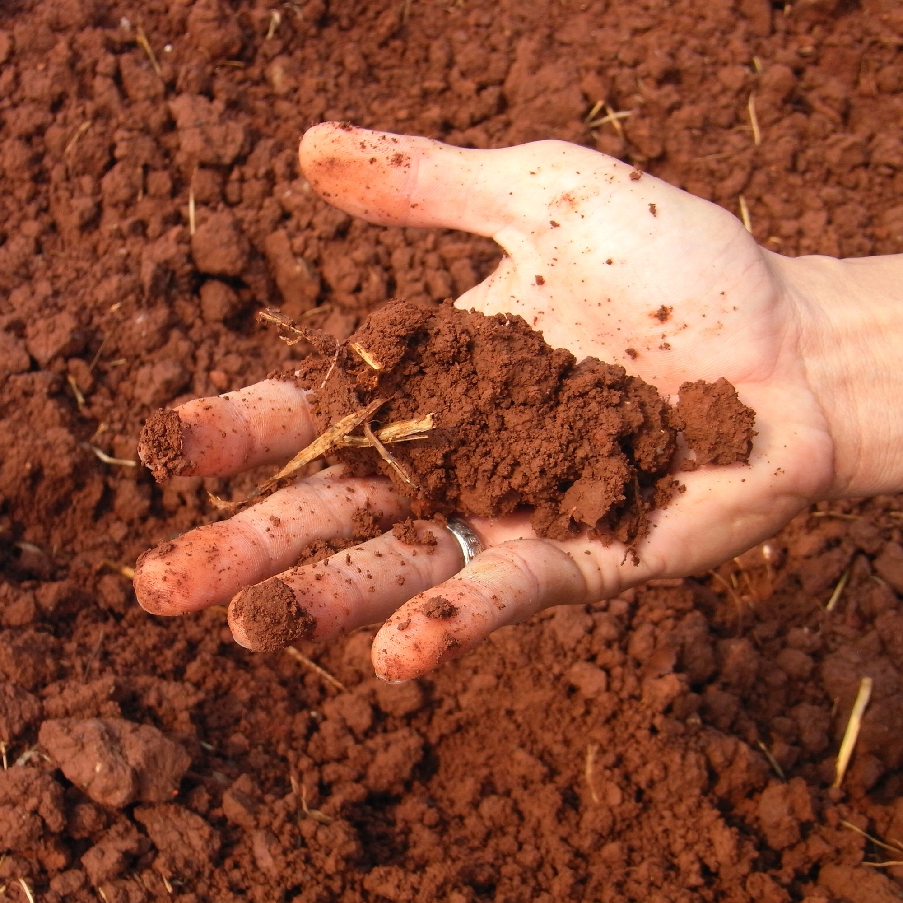

Van, Texas
Twenty years fallow. One season of biology.
Sandra Niggemeyer, butternut squash on clay and sand
Organic matter gained: 46% on compost, 14% on the water-only control, 1% on teas and extracts. Source: her field trial report, 2026. Photograph from the Foundation library, standing in until her own plot picture is cleared.